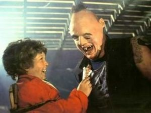
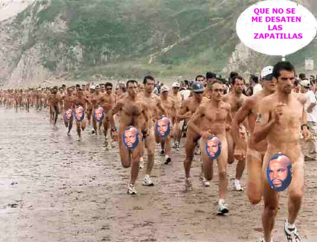

Los goonies
 De: La Frikipedia, la enciclopedia extremadamente seria.
De: La Frikipedia, la enciclopedia extremadamente seria.
De la serie cine para todos:
| Director
|
El primo Richal
|
| Productor
|
Spilberg Stilber
|
| Actores
|
Ya te lo digo abajo, joer....
|
| País
|
Estados Anidos
|
| Año
|
1985
|
| Presupuesto
|
Bastante
|
| Secuelas
|
La vida es Gooniella y La Goonicienta.
|

Data despues de sentarse en su invento.
Mama Fratelli, que digan que esto es una mujer...
 Gordi, chocolatina, Sloth, comienza el romance.
La película, drama historico - religioso, dirigida por el primo Richal y escrita por Stilberg Spilverga, se ha convertido en una de las Película de culto de los Años 80. La banda sonora, escrita y dirigida por Cañita Brava, es tambien de las mas exitosas de la decada reciviendo varios premios en los mejores psiciatricos de todo el mundo. En el cartel de la pelicula hay una dramatizacion de una escena, fijaos como goza Data, ¿Que esta pasando por detras?.
Argumento
Mikey Walsh es un chico que vive en Astorga (Orejón), un pueblo tortillero de los Estados Unidos. Su padre, se ve angustiado sexualmente por los problemas que lo enfrentan a unos inversores - masturbadores que pretenden hacer un puticlub en el barrio donde viven Mikey y sus amigos, Los Goonies. Secta a la que pertenecen y que los obliga a permanecer virgenes y puros hasta que puedan casarse con sus respectivas madres.
Una tormentosa tarde Mikey pasa el tiempo en su casa junto a sus amigos pensando en calzarse ya a sus madres. Aburridos suben al desván, para tocar los cojones a su padre, donde encuentran una gran variedad de consoladores y mascaras de cuero. Entre ellos descubren sin querer un mapa que indica la ubicación de un supuesto pene gigante perteneciente a un tal "Willy el Tripode Tuerto", un pirata desaparecido con su emotripulación hace muchos años.
El grupo decide entonces ir en busca de ese pene que podría solucionar el problema por el que esta pasando el padre de Mikey, utilizando el pene podrian exterminarlo y asi no se preocuparia por el puticlub y que en caso de no resolverse podría derivar en la disolución de "Los Goonies" como secta.
La búsqueda del Tesoro los llevará a una aventura bajo tierra escapando de las trampas de los piratas y de los Fratelli, una familia de hámsters que ansía hacerse también con el botín.
Reparto
- Sean Astin como Mickey Walsh: es el jefe de la secta, no sabe si camelarse a su madre o abrir un puesto de tumbonas en una playa de Torrevieja.
- Josh Brolin como Brand Walsh: hermano mayor, es metrohomosexual, totalmente inmune al film historico que trata de contarnos esta historia.
- Jeff Cohen como "Gordi". es el mas sumiso de la secta, come almohadas - emo, con este persosnaje la pelucula se desvirtua.
- Corey Feldman como "Bocazas": su encanto empieza cuando abre la boca, experto en griego y beso negro.
- Kerri Green como Andy Carmichael: la animadora, no se sabe que pinta pues el film se centra en el incesto, los consoladores y el rollo emo- metrohomosexual.
- Martha Plimpton como Stef Steinbrenner: amiga de la animadora.
- Jonathan Ke Quan como Data: pieza clave de la pelicula, es el que inventa un consolador - diesel de 300 c.c, que destruye el puticlub y hace aparecer piratas y barcos piratas. Goza mucho, vease cartel de la pelicula.
- John Matuszak como "Sloth": típico comico ingles, sus mejores frases son, "aaaaaaarrrgghhhhh" y "sloth quiere a gordi", sufre un romance platonico con Gordi el cual es condenado por la secta y que termina con la expulsion de Pocholo en Hotel Glam.Cabe destacar que es el personaje más atractivo de la pelicula.
- Robert Davi como Jake Fratelli: hamster que trafica con aceitunas barranqueñas, se ve arrastrado junto a su hermano y su mamma a una carrera por salvar al Caballero del Fenix de las garras de Vegeta en el equipo del F.C. Barceló.
- Joe Pantoliano como Francis Fratelli: un señor con peluquin.
- Anne Ramsey como Mama Fratelli: actor de raza femenina, mujer, ( esto no nos lo creemos ni borrachos de crack ), desarrolla el papel de sacerdote en la pelicula, reparte hostias a todo el mundo.
- Lupe Ontiveros como Rosalita: sale 37 segundos en toda la peli, pa que la e puesto, Bocazas le explica lo de las drogas y la camara de tortura sexual en el desvan en casa de Michey.
- Mary Ellen Trainor como la Señora Walsh: en su vida diaria es maltratada psicologicamente por Mel Gibson en el sitio donde trabaja ( Arma Letal ).
- Keith Walker como el señor Walsh: en mitad de la peli se olera el tinglado y tratara de matar a su hijo por querer montarselo con su mujer, que es su esposa, la madre de su hijo.
- Curtis Hanson como Elgin Perkins (El millonario): el hombre del millon de dolares, aparece tambien en Pressing Catch WWF ( el bueno que hechaban en Tele5 hace años, no la mariconada que hay ahora ).
Escenas importantes de la Pelicula
- Gordi hazme el supermeneo: frase dicha por bocazas, creo que sobran los detalles, solo decir que culmina satisfactoriamente y cigarrito de despues...
- Momento estatua: Data empuja a Bocazas que empuja a Gordi que tira una estatua pequeña de un señor desnudo, se le rompe el pililili y Gordi se lo pega alreves, mirando hacia arriba, escena que hace clara alusion a Stalin ( todas las mañanas se meaba en la cara, de ahi su gran bigote ).
- Gordi lo confiesa todo: tras una severa tortura, confiesa que en tercero llevo una chuleta al examen de historia, en cuarto uso el peluquin de su tio para hacer de Moises en la obra del colegio, en quinto tiro a su hermana escaleras abajo y le hecho la culpa al perro, por eso su madre le mando a un campamento para niños gordos y un dia a la hora de comer le dio la vena y se puso a tragar como un loco, pero lo peor que hizo nunca fue vomitar en casa y escondio la pota en la chaqueta y se fue al cine y se subio al gallinero y vomito por encima de la barrandilla y callo encima de la gente y luego la gente comenzaron a vomitarse unos a los otros y .... y .... y ... nunca lo ha pasado peor en toda su vida....
- Encuentro entre Sloth y Gordi: el le dice señor, sloth le dice aaaaaaahhhrrrggggg y todo empieza, hay chocolatinas entremedias, al final de la escena Sloth acaricia un pie a Gordi.
- Descubrimiento de Chester Copperpot: lo encuentran en los tuneles bajo el puticlub, aplastado por unas bolas chinas, todos dicen " ooooohhhh ", es la escena mas cara de la pelicula.
- Tronco resbaladizo: Los goonies son perseguidos por los hamsters ( familia Fratelli ), aparece un tronco cruzando un rio subterraneo, lo cruzan y Data hecha un lubricante " especial " pirata, los hamsters se resbalan y caen con las piernas abiertas en el tronco bailando el cascanuezes.
- Beso entre Mickey Walsh y la animadora: estan en el agua y se besan rozando casi la heterosexualidad, lo que no sale en las camaras es el trabajito submarino de bocazas a Mickey.
- Deslizamiento por los toboganes: realizado por especialistas en el Acuapark de madriz, por un momento se ve un trozito de braguita de la animadora que hace pico de atencion espectadoriana en la pelicula.
 Todo el pueblo festejando lo de las pirulas - cianuro. Algunos de sus antepasados fueron cazados por Chester Coperppot por sus enormes Emeas
- Barco pirata: escenario donde luchan con los hamsters y donde Mickey no encuentra el pene gigante, luego encuentra unas capsulas de cianuro de colorines que se las toman todos alfinal de la pelicula entre grandes gritos de los actores ( algunas de ellas contenian cianuro de verdad ).
- Escape de la cueva: todos pasan entre las piernas de Sloth, !!todos¡¡, rompiendo el boto de castidad que les permitia casarse con sus madre-s.
Curiosidades
- El tema principal de la película es "Hay campanera" interpretado por la cantante Cyndi Laupuercaiper, creado por Cañita Brava. En 1985 sacó el disco, "Hay poco Rock and Roll", en el que incluyó el tema numero 7 " Causas de la Primera Guerra Mundial " que también aparece en el largometraje en forma de esquema-resumen.
- En la última escena de la película, el barco pirata en alta mar en realidad es un trozo del petrolero Prestige de la película que se monto en Galicia, y que fue añadida por los maquetistas en el rodaje.
- El segundo álbum musical de las mollejas de Van Gogh, "El viaje de Copperpot", está inspirado en Chester Copperpot, otros dicen que Marlboro, un cazador de miembros erectos o como el los llamaba " emeas ", mencionado en la película.
- Jonathan Ke Quan es conocido también por ser el famoso chino que muere en humor amarillo y en las pelis de Indiano Jones.
- El primo Richal director de la película, tuvo una breve participación hacia el final del metraje, interpretando a un travesti.
- Existieron al menos 6 escenas de sexo duro rodadas que no se incluyeron en el metraje final. En los años 90 se reeditó en DVD donde aparecen 3 de estas escenas, una de ellas con animales.
- En una de las escenas anales finales, cuando los niños son finamente rescatados en la playa, el personaje del pequeño japonés "DATA", hace referencia con la frase "El pulpo fue lo peor", a una escena eliminada, donde los niños eran atacados por un viejo verde gigante pedrasta con gabardina. Escena recuperada en la edición de DVD.
- El videoclip de la canción de Cindy Lauper para la película, tiene como protagonistas a los niños y a los luchadores del "Presing Catch" o lucha libre americana WWF, de la época (Andrés el Gigante, Roddy Pipper,Hristo Stoichkov etc.)
- El barco pirata que aparece en la película fue construido a escala real. Al terminar el rodaje fue ofrecido a quien le pudiera interesar, siendo comprado por Paco Clavel y Boris Izaguirre, que fuero los piratas mas malosos de los siete mares.
- John Matuszak (Sloth) antes de ser actor, fue jugador de petanca americana, en la peli lleva la camiseta de los Villaverdes del Tio Casimiro, del cual era delantero centro y patriarca.
- El pene original de la película se lo quedó Sean Astin (Mickey), pero su madre lo tiró a la basura pensando que era un miembro viejo y sin importancia.
- John Matuszak (Sloth) aparece en una escena con una camiseta de Superanalman. El primo Richal, el director de la película, dirigió la película Superanalman (pelicula) en 1978.
Autor(es):
- Crazy-monkeeey
- Alven94
- Milongas
- Sir Lancebot
Frikipedia 2005-2016, Licencia
GFDL 1.2 - Extraído por FrikiLeaks